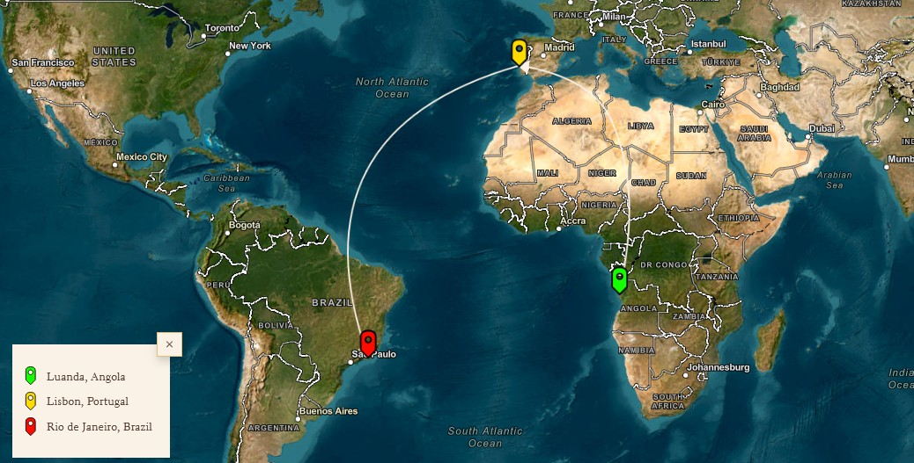
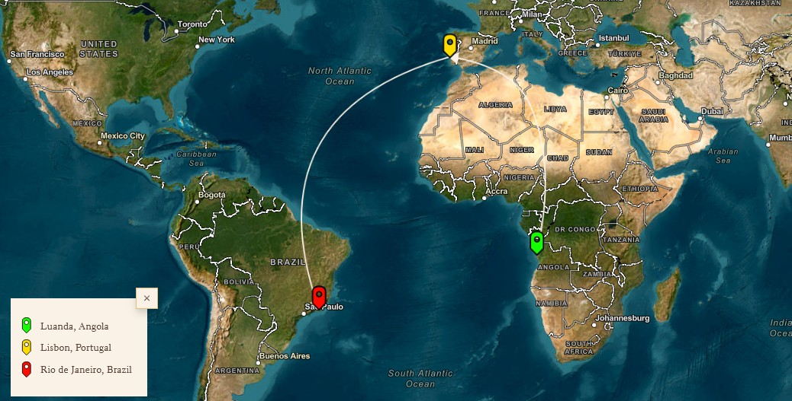

The hills of Rio de Janeiro are burning. The day approaches when war will descend upon the wealthy neighborhoods of the city. A former colonel from the Ministry of State Security of Angola, who exchanged his country for Brazil, escaping the traps of a fierce love and the torment of memory, prepares for that day. A journalist dives into the fires of the Rio favelas in search of answers to questions that few dare to ask. All of this is happening now. Zumbi, the mythical hero of the Quilombo of Palmares, has returned to take Rio.
Author : José Eduardo Agualusa
Born in Huambo, then Portuguese West Africa, he is the maternal grandson of Joaquim Fernandes Agualusa, Officer of the Civil Order of Agricultural and Industrial Merit, Industrial Class, on May 13, 1960. He studied agronomy and forestry at the Higher Institute of Agronomy of the Technical University of Lisbon. He collaborated with the Portuguese newspaper Público since its foundation; in the Sunday magazine of this newspaper (Pública), he wrote a biweekly column. He also wrote columns for the Portuguese magazine.
 
